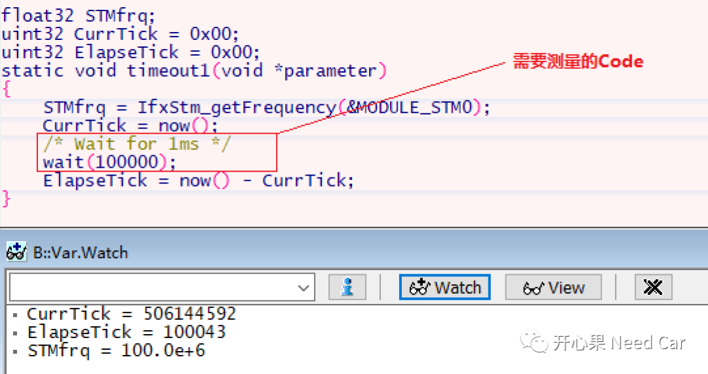
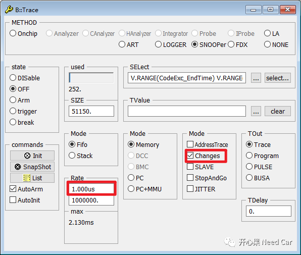
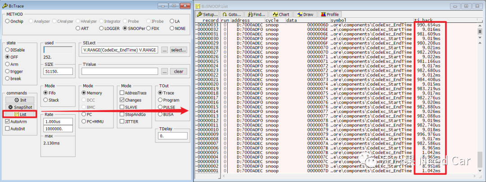
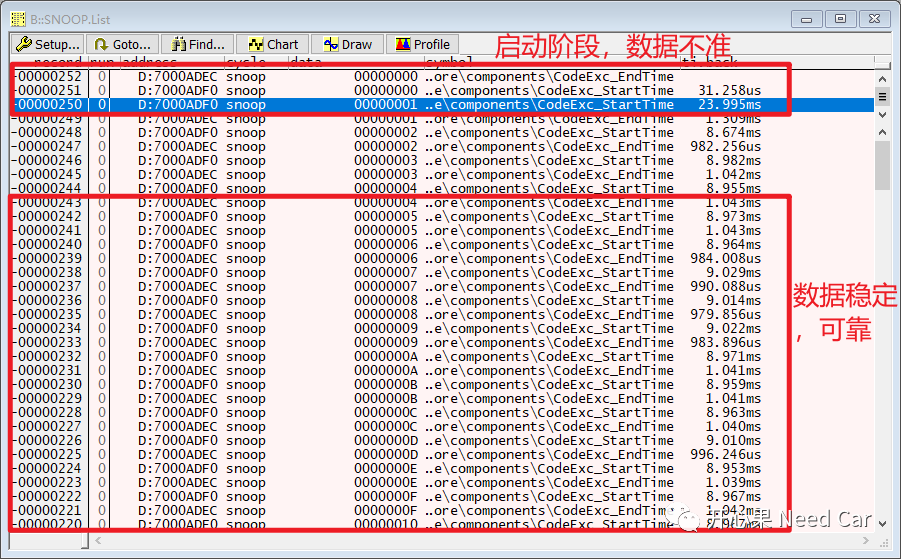
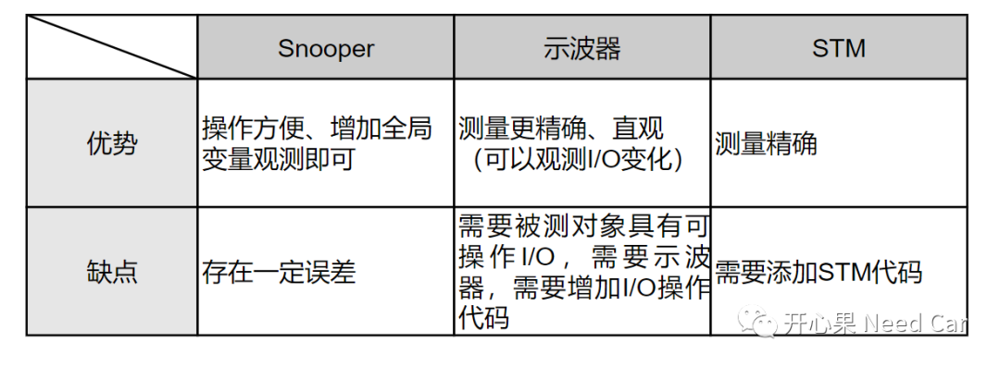

开心果 Need Car · 2023-07-23T08:57:00+08:00 · 微信原文
工程开发中，有时，为了优化程序，需要先确认哪部分代码耗费时间。所以，如何测量代码执行时间呢？在之前的文章中提到过两种方式：利用示波器测量I/O电平变化计算代码执行时间、利用系统定时器STM（System Timer）测量代码执行时间。可以参考前文《Debug手段：使用I/O测量代码执行时间》，除了上述两种方式，还有其他方法吗？或者说还有没有更简单一些的方法？答：有，本文介绍第三种方式—利用Lauterbach的Snooper功能，测量代码执行时间。
1、使用Lauterbach的Snooper功能测量代码执行时间
讨论Lauterbach Snooper测量代码运行时间之前，先用STM做一个对比。
（一）STM测量代码执行时间
本文使用wait()接口等待1ms表示要测量的Code，如下所示：

（二）使用Lauterbach的Snooper功能测量代码执行时间
关于Lauterbach的Snooper功能，更多使用详情可以参考前文《TRACE32调试：基础调试技巧之SystemMode、SNOOPer》。测试代码如下所示：
uint32 CodeExc_StartTime = 0x00;uint32 CodeExc_EndTime = 0x00;static void timeout1(void *parameter){CodeExc_StartTime++;/* Wait for 1ms */wait(100000);CodeExc_EndTime++;}
使用Lauterbach的Snooper功能测量代码的执行时间，相对比较简单，仅仅需要在测试代码的前后各增加一个变量（比如：本文的CodeExc_StartTime和CodeExc_EndTime），在Snooper中看一下这两个变量的时间间隔即可得到目标代码的执行时间。


测量注意事项：

2、三种代码执行时间测量方式对比

如上三种测量方式，各有各的特点，可结合项目实际选用对应的方案。如果测量代码或者Task运行时间在ms级别，使用Snooper方式更简单、快捷。如果测量代码在us或者ns级别，使用示波器或者STM方式更合适。
往期精彩回顾